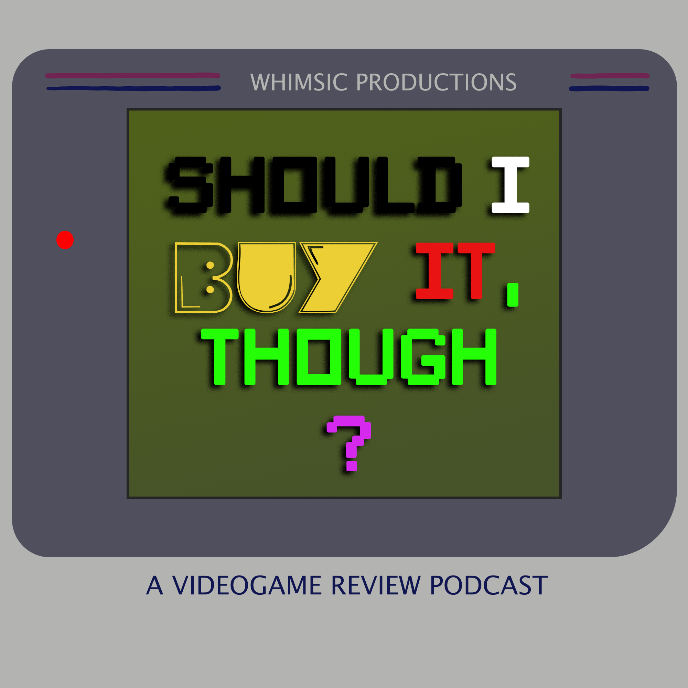

Should I Buy It, Though? is a video game review podcast where people with varying interests, skill level, and experience decide whether that shiny new game is worth your hard earned gold. The show features Giancarlo Herrera, Terrence Berry, Nicholas Palazzo, Nicholas Benetatos, and Amanda Fernandez-Acosta. Follow the (sometimes heated) discussion as we make our case before a final vote to help you choose which games are worth your time. If you enjoy our content, consider supporting us on Patreon where you can get access to exclusive content such as livestreams and early first impressions for when you need to make a quick buying decision.
Meet the Cast

Giancarlo Herrera
Amanda Fernandez-Acosta

Nicholas Benetatos
Nicholas Palazzo

Terrence Berry